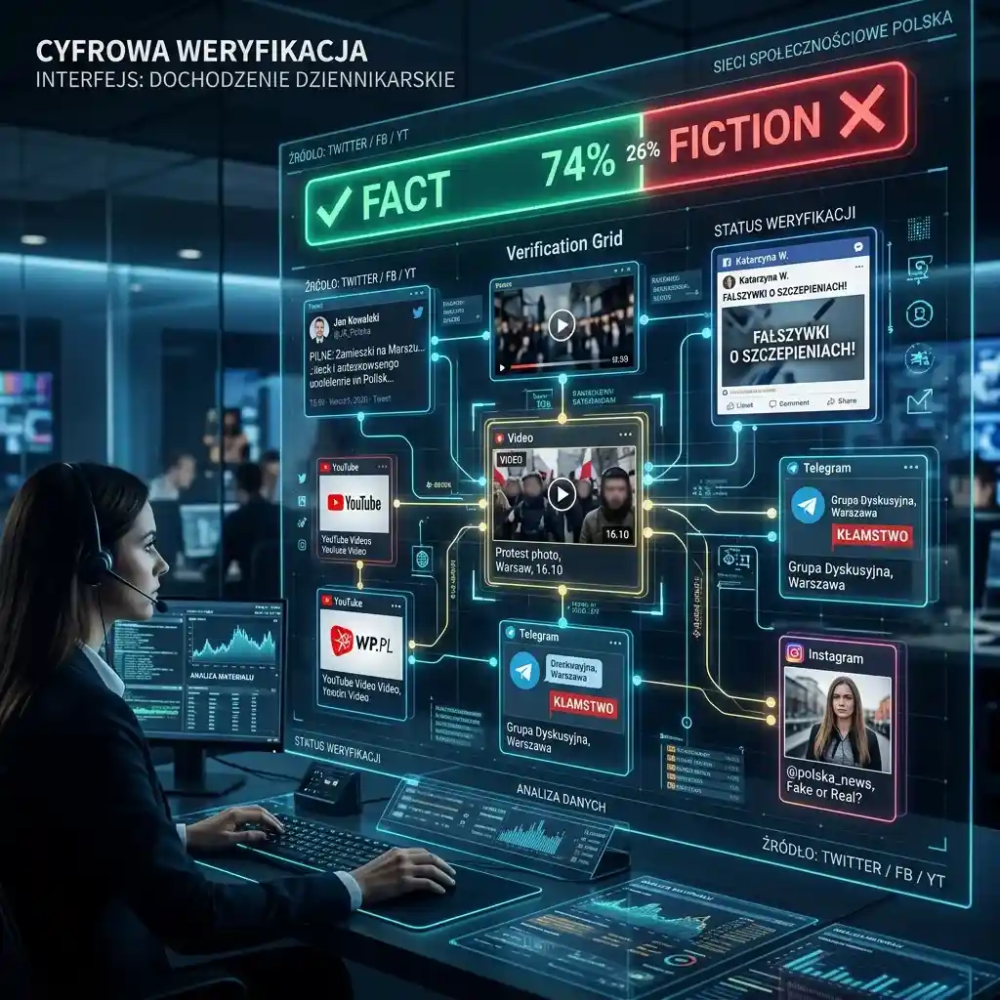

Social Listening and PR Monitoring: Tracking Viral Trends via Multi-Screen Grids

A whirl of conflicting information in the digital age moves at light-speed, demanding new tools for tracking brand reputation.
In the digital age, news travels fast—but misinformation and consumer opinions travel even faster. The narrative surrounding major brand product releases or sudden public relations crises is a textbook case of how a single viral video, if amplified by major creators and media channels, can spiral into a nationwide trend within hours. To truly navigate this level of information chaos, a multi-stream intelligence setup is vital to separate fact from viral speculation and track consumer responses in real time.
The Anatomy of a Viral Trend: Real-Time PR Monitoring
A marketing controversy or viral trend often begins on community forums or social media feeds. Within hours, however, the narrative begins to fragment. Different sources, including investigative bloggers, industry influencers, and mainstream news outlets, will point out different aspects of the trend. This rapid-fire exchange of claims and counter-claims is exactly why a multi-screen setup is essential. By monitoring official corporate announcements side-by-side with live commentary feeds from independent analysts, you can see the different layers of the story as they unfold, rather than relying on a single perspective.
For brands and public relations agencies, keeping an eye on live updates allows for immediate course corrections. Using a multi-video dashboard, they can display regional news channels, customer feedback videos, and key tech reviews concurrently, assessing overall reception without switching tabs and losing valuable time.
The Role of Content Ecosystems: Identifying Narrative Sources
The influence of major YouTube channels and social media personalities on brand reputation cannot be understated. In the modern consumer landscape, these creators act as the primary information sources for millions of buyers. When an authority channel publishes a review or commentary, it is often taken as absolute truth. However, speed-over-verification reporting can sometimes present incomplete pictures.
For PR experts using YoutubeMulti, dedicating specific tiles to competitor releases while keeping an eye on product announcement feeds and customer review channels allows for a broader social listening experience. This multi-focal approach is the only way to see if major players are modifying their claims, retracting reviews, or highlighting new features in real time.
Fact vs. Speculation: Verifying Public Statements
When a crisis occurs, a brand's official response must be monitored alongside the audience's reaction. Often, public statements are parsed sentence by sentence by industry analysts. The lack of a definitive explanation or a delayed video response can mean speculation continues to mount. To properly track these developments, you need a way to verify the authenticity and reception of statements as they appear.
Use YoutubeMulti to stack official corporate briefings alongside live reaction panels and commentary streams. This verification grid helps you compare official messaging with raw audience sentiment before drawing conclusions on the trend's trajectory.
Navigating Information Chaos: The Viral Monitoring Grid
A viral social media event is a high-information event. Between the sensationalist titles, clickbait thumbnails, and thousands of conflicting opinions, there is too much noise for a single screen. YoutubeMulti allows you to build a professional-grade monitoring dashboard to filter this noise. By organizing your screen into a structured layout, you can track multiple live analytics feeds, product demonstrations, and press conferences concurrently.
Conclusion: Reclaiming Control Over Digital Information
Successful PR and social listening in 2026 relies on processing speed and situational awareness. Relying on traditional search queries and manual tab refreshes is no longer sufficient. With the multi-stream strategies outlined in this guide, brands and digital professionals can build optimized visual dashboards to maintain total clarity in a fast-moving market.